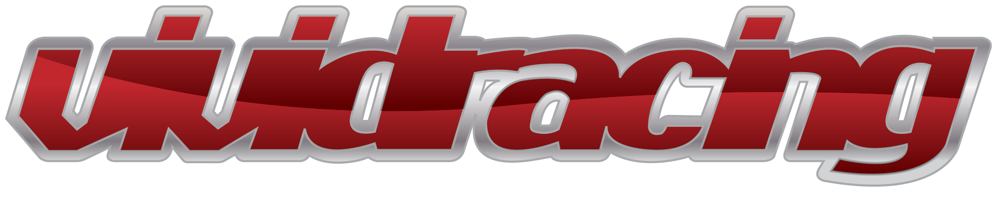
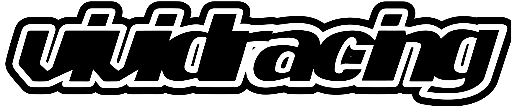

Legacy / Flat. Same Silhouette.
A true JND flatten built from the original Illustrator source. Same letterform shapes, same italic stance, same proportions — chrome gradient, bevel, drop shadow, and outer stroke removed. One ink. The inner outline detail is preserved as a subtle reference to the original construction.
Legacy — Chrome Wordmark

Mid-2000s import-tuner aesthetic. Reads as cluttered next to the premium brand reference set the playbook commits to (Porsche, Patek, Loro Piana, Veilance). Chrome gradient, bevel, drop shadow, and outer silver stroke all date the mark visually.
Flat — JND Master · Heritage Red on Light

Same wordmark. Same italic stance. Same letterform DNA. Stripped of all the period-specific decoration. Reads as restrained, contemporary, and consistent with every premium reference the playbook names. Direct buyers still recognize it — the silhouette is unchanged. Inner outline detail preserved for character continuity.
Flat — JND Master · Avorio Creme on Dark

Same construction inverted for dark surfaces — apparel embroidery, paddock signage, web header on dark hero sections, social avatars on dark backgrounds. The inner outline detail flips to dark, maintaining the structural reference.
Flat — JND Master · Single-Color Utility

For single-ink applications: black on letterhead, foil stamps, single-color embroidery, fax-grade documents, anything that can't render two colors. Same silhouette, no inner detail.
Size Test — Scales From Favicon to Hero
Holds shape at every size. The inner outline detail simplifies visually at favicon size, but the silhouette remains the same recognizable mark.